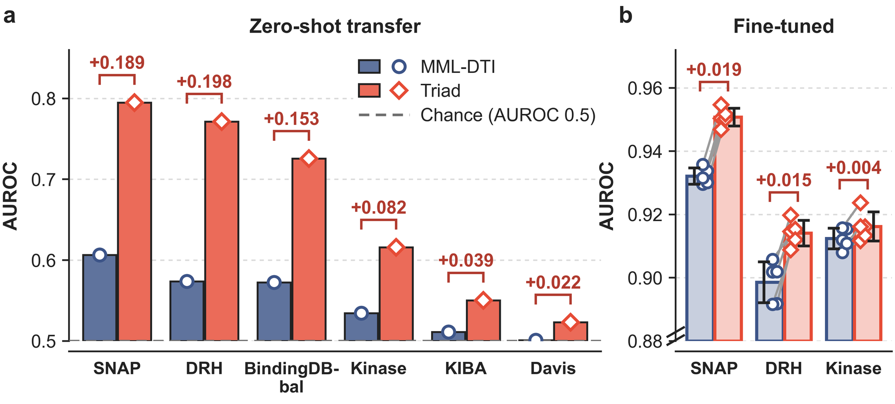

Two fixes that only
work together
MML-DTI compresses each drug into pseudo-tokens and passes only the row and column means of its token–residue scores to the classifier. Triad restores the SMILES tokens and scores them against the protein residues with its TMP module (token–residue multiplicative pooling). In a 2 × 2 ablation on DrugBank, either change alone gains 0.006 AUROC, not significantly; both together gain 0.0247, in every fold.
1What the backbone throws away
Pretrained language models give a drug–target interaction (DTI) predictor one vector per chemical token (MoLFormer, from the SMILES string) and one per protein residue (ESM-2). In principle this is the granularity the task needs, because binding is a local event in which particular chemical substructures contact particular residues.
MML-DTI, the pooled-vector backbone Triad builds on, is a strong recent model. It discards that resolution in two places.
Pseudo-tokens
It merges hyperbolic graph features, molecular fingerprints and MoLFormer embeddings into one 256-dimensional drug vector, then reshapes it into an 8 × 32 grid. The eight rows, the pseudo-tokens, correspond to no chemical substructure.
Margins only
Its additive interaction module scores every pseudo-token–residue pair inside a ReLU layer, but passes only the row and column means of those scores to the classifier. The part of each score that is specific to one pair is discarded (Proposition 1 in the paper).
![Two-panel figure. Panel A, top, labelled Existing: the drug tokens C, N, O, S are compressed into one 1 by 256 vector and reshaped into four pseudo-tokens v1 to v4; the additive operator scores them against residues A, V, K, L on a 4 by 4 grid, and only the averages over residues (T weights) and over tokens (L weights) are passed on as two small bar groups. Panel A, bottom, labelled TMP: the tokens C, N, O, S are scored directly against residues A, V, K, L on the same kind of grid, and every token–residue pair is weighted, drawn as links between tokens and residues. Panel B, titled Cold-protein pilot: DrugBank cold-protein test performance of ablation configuration A, labelled Existing, versus configuration D, labelled TMP, AUROC 0.851 versus 0.876 and AUPRC 0.861 versus 0.884, with five fold points and error bars.](assets/fig-motivation.png)
which token pairs with which residue
Pairing 1 puts C with A, N with V, O with K and S with L. Pairing 2 puts C with K, N with L, O with A and S with V. Both leave every row mean and every column mean of M exactly where it was.
Toy numbers, not model outputs. Four drug tokens, four residues, scores Mtl = xt + yl + λ Ξtl, where Ξ is +1 on the paired cells and −⅓ elsewhere, so each of its rows and columns averages to zero. A: the additive operator reweights each token and residue by ½ plus the logistic function of its row or column mean of M; those weights are drawn as bars. B: TMP takes one softmax over all sixteen cells and pools fixed four-dimensional pair features, u = Σtl Atl (dt ⊙ pl); dashed bars show u at λ = 0.
This shows what each operator can pass on (Proposition 1); how much of it the trained model uses is examined in the paper (Section 3.10.2). The peaked attention in the toy is for illustration: wherever it was recorded, the trained attention is close to uniform (section 5).
2Two fixes, one module
Triad, named for the three streams its fusion layer combines, consists of a drug encoding module, a protein encoding module and the TMP module (token–residue multiplicative pooling) that couples them. Its two departures from the backbone answer the two deficits above.
Fix one, in the drug encoding module. A frozen MoLFormer encodes the SMILES string as a token matrix D ∈ ℝT×768 and Triad keeps one row per SMILES token (strings are truncated to 64 tokens). A frozen ESM-2 encodes the sequence as P ∈ ℝL×640, one row per residue. Both reach TMP without pooling. Fix two, TMP. The additive operator is replaced by a bilinear one over the complete token–residue grid.
In parallel, the encoding modules supply two global-context streams, an addition of Triad rather than part of the backbone's fusion module: the mean of D, and the mean and element-wise maximum of P, each projected to 128 dimensions. The three 128-dimensional streams are concatenated into 384 dimensions, and an MLP (384 → 1024 → 512 → 2) predicts the interaction probability.
![Architecture diagram in two panels. Panel A, Triad architecture: at the bottom, the drug SMILES and the protein sequence. The drug encoding module passes the SMILES through MoLFormer to a T by 768 token matrix, whose mean is projected from 768 to 128 dimensions. The protein encoding module passes the sequence through ESM-2 to an L by 640 residue matrix, whose mean and max are projected from 1280 to 128 dimensions. Between them, the TMP module takes the tokens and residues unpooled onto a T by L grid. Three 128-dimensional features are concatenated and sent to a classifier that outputs the interaction probability. Panel B, the TMP module: drug tokens and residues each pass through a linear layer, are combined by a multiplicative compatibility score, turned into pair weights A of size T by L by a joint softmax, and reduced by weighted joint pooling to a 128-dimensional feature.](assets/fig-architecture.png)
Inside TMP
- Project. Linear layers with ReLU map tokens and residues, whose feature dimensions differ, into a shared 384-dimensional space: d̃t for token t, p̃l for residue l.
- Score every pair multiplicatively. Stl = hg⊤(d̃t ⊙ p̃l), a learned linear functional of the element-wise product, which expresses the compatibility of a token with a residue directly.
- One softmax over the whole grid. The softmax is taken jointly over all T × L pairs, so each glimpse distributes a fixed unit of attention across the grid rather than normalising each row separately.
- Pool the weighted pairs. u = Σtl Atl (d̃t ⊙ p̃l) ∈ ℝ384, reduced to 128 dimensions by summing within non-overlapping groups of three coordinates.
- Two glimpses, one normalisation. The outputs of the two glimpses are summed and layer-normalised into the 128-dimensional interaction feature.
3Neither fix works alone
The paper crosses the two fixes in a 2 × 2 factorial ablation on DrugBank under cold-protein partitioning: the same five frozen folds, the same optimiser (Adam) and stopping rule, and both global streams present in every configuration. Test AUROC, five-fold means:
operator
operator
Replacing only the operator (A → B) or only the drug representation (A → C) improved AUROC by 0.0059 and 0.0061, neither significantly. Replacing both improved it by 0.0247 in all five folds. Because neither the single substitutions nor, after correction, the joint substitution A → D is distinguishable from no change, the case for synergy rests on the interaction term, which remained significant after Holm correction. Token inputs under the bilinear operator (B → D) were the only one of the seven predefined contrasts that was significant after correction.
Configuration A is not the published MML-DTI: it re-implements the backbone's additive module in the ablation code, carries Triad's two global streams and is trained with Adam. It scores 0.851, against 0.856 for the published backbone trained with its own optimiser.
![Three-panel factorial analysis. Panel a, interaction plot: test AUROC of configurations A and C under the additive operator and B and D under the bilinear operator, with fold points and error bars; the dashed Base256 line rises by +0.0059 from A to B and the solid token line rises by +0.0186 from C to D. Panel b, paired changes in AUROC with 95 percent confidence intervals for A to B, C to D, A to C, B to D and D to E; C to D and B to D are near 0.019, A to B and A to C near 0.006, and D to E slightly negative. Panel c, the fold-wise interaction for folds 1 to 5, all positive, with mean 0.0126, 95 percent CI 0.0069 to 0.0184 and Holm-adjusted p = 0.028.](assets/fig-ablation.png)
4What we measured
Triad against its backbone MML-DTI and three published models whose official code could be run on all four datasets (DACMF-DTI, BINDTI, NFSA-DTI), under random, cold-protein and cold-drug partitioning. Every model reads the same five frozen cross-validation folds.
| AUROC | Triad | MML-DTI | DACMF-DTI | BINDTI | NFSA-DTI |
|---|---|---|---|---|---|
| DrugBank interaction record | |||||
| Random | 0.919±0.002 | 0.904±0.002 | 0.878±0.006 | 0.868±0.005 | 0.861±0.006 |
| Cold-protein | 0.876±0.008 | 0.856±0.012 | 0.765±0.013 | 0.714±0.010 | 0.736±0.021 |
| Cold-drug | 0.864±0.013 | 0.844±0.016 | 0.820±0.015 | 0.832±0.009 | 0.826±0.015 |
| SNAP interaction record | |||||
| Random | 0.940±0.001 | 0.917±0.006 | 0.909±0.002 | 0.912±0.004 | 0.899±0.007 |
| Cold-protein | 0.884±0.015 | 0.861±0.020 | 0.778±0.023 | 0.787±0.030 | 0.756±0.021 |
| Cold-drug | 0.898±0.010 | 0.878±0.016 | 0.871±0.013 | 0.885±0.015 | 0.865±0.017 |
| DRH interaction record | |||||
| Random | 0.911±0.007 | 0.882±0.005 | 0.874±0.009 | 0.869±0.010 | 0.859±0.006 |
| Cold-protein | 0.877±0.006 | 0.855±0.005 | 0.779±0.014 | 0.712±0.019 | 0.737±0.018 |
| Cold-drug | 0.860±0.009 | 0.831±0.008 | 0.829±0.011 | 0.839±0.004 | 0.823±0.002 |
| Kinase affinity threshold | |||||
| Random | 0.915±0.007 | 0.905±0.006 | 0.923±0.007 | 0.919±0.005 | 0.913±0.003 |
| Cold-protein | 0.810±0.021 | 0.844±0.009 | 0.823±0.017 | 0.740±0.014 | 0.787±0.031 |
| Cold-drug | 0.807±0.033 | 0.796±0.018 | 0.827±0.013 | 0.803±0.042 | 0.828±0.018 |
| Triad ranks third here, under every protocol. | |||||
Table 2 in the paper: within-dataset AUROC, mean over the five frozen folds (one seed). Red marks the highest mean in a row, which does not by itself denote significance. Kinase is greyed because Triad does not lead there: DACMF-DTI (random), MML-DTI (cold-protein) and NFSA-DTI (cold-drug) lead, underlined.
Triad attains the highest mean AUROC in 9 of the 12 dataset–protocol settings; all three exceptions are on Kinase. On the interaction-record datasets DrugBank, SNAP and DRH it is first under every protocol, with a margin over the backbone of similar size under all three (0.015–0.029 AUROC) that does not grow from random to cold-drug partitioning. On Kinase, an affinity-threshold dataset, it is mid-field throughout.
Zero-shot transfer
Models trained on DrugBank were applied, without any target-domain training, to six external datasets. Triad improves AUROC over the backbone on all six, by 0.022 to 0.198. The backbone fell to 0.501–0.606, at or near chance on four of the six targets, whereas Triad retained 0.523–0.795.
| Target | label | MML-DTI | Triad | Δ |
|---|---|---|---|---|
| SNAP | interaction record | 0.606 | 0.795 | +0.189 |
| DRH | interaction record | 0.574 | 0.771 | +0.198 |
| BindingDB-bal | affinity threshold | 0.573 | 0.726 | +0.153 |
| Kinase | affinity threshold | 0.534 | 0.616 | +0.082 |
| KIBA | affinity threshold | 0.511 | 0.550 | +0.039 |
| Davis | affinity threshold | 0.501 | 0.523 | +0.022 |
Zero-shot columns of Table 7 in the paper: each source model applied once to the complete labelled target dataset. Δ is Triad minus MML-DTI.
The zero-shot advantage is large on the interaction-record targets and small on Davis and KIBA, where both models are close to chance. After fine-tuning on target folds the two models are close: the advantage persisted on SNAP (+0.0186) and DRH (+0.0155), both in 5/5 folds, was not significant on Kinase and BindingDB-bal, and reversed on Davis and KIBA. The advantage these experiments support therefore lies in transfer without target labels, not in fine-tuned performance.


5What the attention does not show
The demo shows what TMP can pass on. The tempting reading is that Triad wins because it learns which token goes with which residue. The measurements do not support that reading, and the paper says so.
Wherever it was recorded, the trained attention is close to uniform. The normalised joint entropy of the attention, averaged over both glimpses and all test pairs, was logged for separate cold-drug runs of the same architecture on seven benchmarks, not for the models of Table 2 in section 4. Its fold mean was at least 0.99991 in all 35 folds. For the DRH cold-drug case-study pair, scored by one of the Table 2 models, the two glimpses have normalised entropy 0.99989 and 0.99992. The cold-protein ablation runs did not log attention, so near-uniformity there is an extrapolation.
Under near-uniform attention, the interaction stream is, to first order, a multiplicative fusion of the first and second moments of the projected tokens and residues (Proposition 2), rather than a model of individual token–residue correspondences. So the paper does not attribute the gain to localised token–residue pairing, and does not read the attention map as its mechanism.
The advantage is also not universal. It concentrates on interaction-record datasets and is absent on affinity-threshold data: Triad is mid-field on Kinase under every protocol, and after fine-tuning the advantage holds on SNAP and DRH but vanishes or reverses on Kinase, BindingDB-bal, KIBA and Davis. One explanation is label construction, since thresholding a continuous affinity splits chemically similar pairs across the decision boundary. The split is, however, confounded with other dataset properties, so this is an interpretation consistent with the data, not a demonstrated mechanism.
6Cite
@article{xue2026triad,
title = {{Triad}: Token--residue bilinear attention with dual global
context for drug--target interaction prediction},
author = {Xue, Tianxi},
note = {Manuscript},
year = {2026}
}